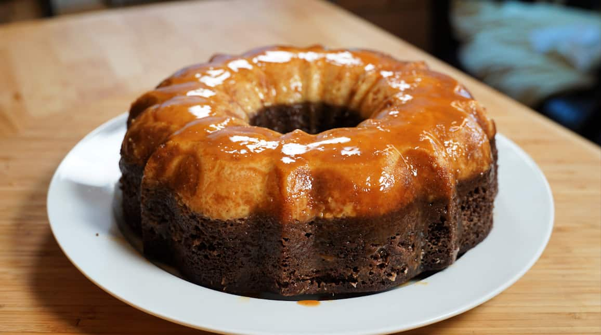

Impossible Cake

Impossible Cake Recipe
This cake has a reputation! A sweet and tempting caramel is drizzled into
a greased Bundt® pan, followed by a gorgeous smooth mixture for a
moist and rich chocolate cake and a layer of flan. Serve topped with more
melted cajeta if you wish.
Ingredients
- ¼ cup cajeta, sweetened caramelized goat's milk syrup
Cake
- ½ cups all-purpose flour
- 6 tablespoons unsweetened cocoa powder
- 1 teaspoon baking soda
- 1 teaspoon baking powder
- ½ cup butter, softened
- 2 ½ tablespoons butter, softened
- 1 cup white sugar
- 1 egg
- 2 tablespoons strong brewed coffee
- 1 cup whole milk
Directions
-
Preheat oven to 350 degrees F (175 degrees C). Grease the base and sides
of a 10-inch fluted tube pan. Dust lightly with flour; tap to remove
excess.
-
Fill a shallow baking pan with enough water to come 1/3 of the way up
the sides of the tube pan. Place water bath in the oven to warm up while
it is preheating.
-
Pour caramel sauce into a microwave-safe bowl. Microwave until warm and
pourable, about 1 minute. Pour into the prepared tube pan, covering the
base completely.
-
Mix flour, cocoa powder, baking soda, and baking powder together in a
bowl.
-
Beat 1/2 cup plus 2 1/2 tablespoons butter in a bowl with an electric
mixer until smooth. Add sugar; beat until light and fluffy. Beat in 1
egg and coffee. Alternate adding flour mixture and milk, mixing well
between additions. Pour cake batter evenly over caramel in the tube pan.
-
Combine evaporated milk, condensed milk, 4 eggs, and vanilla extract in
the bowl of a food processor; blend until smooth. Pour over cake batter
through a fine sieve.
-
Bake in the water bath in the preheated oven until a toothpick inserted
into the chocolate cake comes out clean, about 1 hour.
-
Let cake cool, about 1 hour. Carefully run a thin knife around the edges
to loosen the cake, cover with a serving plate, and flip onto the plate.